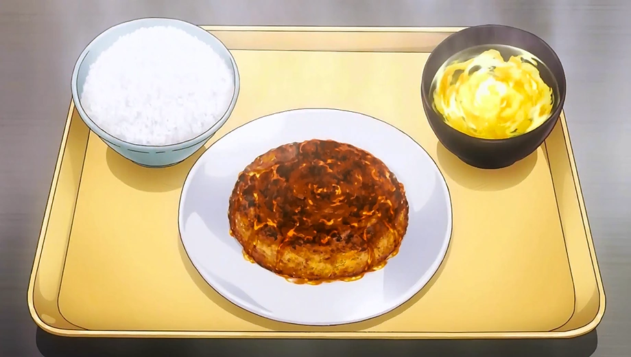

YUKIHIRA STYLE CANNED MACKEREL BURGER

Description
Improvised Mackerel Burger Meal is a dish made by Sōma Yukihira for Fumio Daimidō's entrance exam for Polar Star Dormitory. In order to be granted entrance into the Polar Star Dormitory, Sōma improvised this dish using nothing but leftover ingredients in the dorm's kitchen. Sōma created a magnificent Mackerel Burger that is both juicy and tender along with an egg soup using some dried squid that he brought as the basis for dashi. Experiencing this meal leaves one with a pleasant feeling, sometimes reminding a person of romance in their youth.
Ingredients
- 190g canned mackerel in water
- Half an onion
- 1 egg, 3/2 cups panko, salt & pepper
- 1 tbsp seasme oil
- 2 tbsp ponzu sauce
- Potato starch
- Grated daikon radish
- Shiso
Steps
- Mince the onion and put in a bowl with the lightly drained mackerel. Add the egg, panko, salt, pepper, and mix well.
- Dampen hands wth water and mold the mixture from the previous step into a patty. Put the patty in a frying pan with the sesame oil and fry until golden brown. Once both sides are browned, turn heat to low, cover, and let simmer from 3 minutes. Remove pan from heat and move the patty to a plate.
- To make the sauce, take the same pan used in the previous step and add the ponzu sauce as well as the juice from the can of mackerel. Add potato starch and thicken to taste.
- Pour the sauce from step 3 over the patty. Garnish with grated daikon readish and shiso leaves, and it's done!